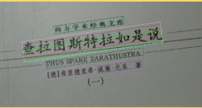
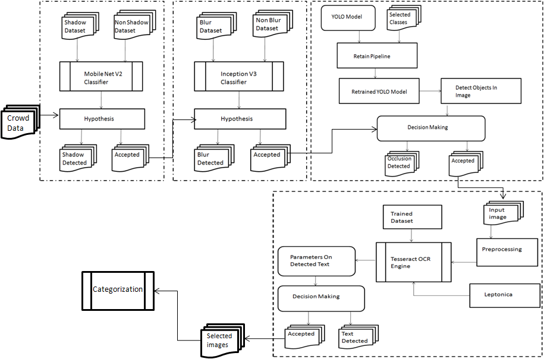
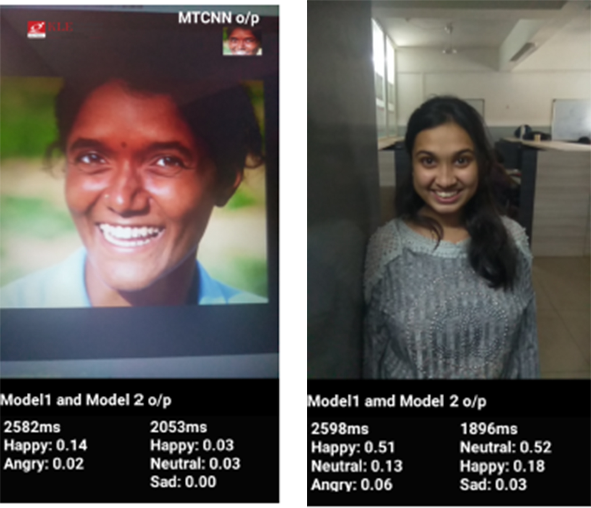

SDE · Cloud Security · Edge/CDN · Media Expert · AI Researcher · Ex-Founder
6+ years at Amazon Web Services — from building security controls that protect millions of cloud resources to running live streaming infrastructure for 25M+ concurrent viewers. Founded an EdTech startup, shipped AI research at Samsung, and built community platforms since I was 18. Always chasing the next challenge — I thrive on learning, building, and pushing boundaries.
System Development Engineer at AWS, currently building cloud security posture management for Security Hub. Over 6 years at Amazon — progressed from intern to SDE, working across networking, edge/CDN, media streaming, and now security. Before AWS, I was an AI researcher at Samsung PRISM, founded an EdTech startup (Aura VR Education), and built community platforms that serve 1000+ users.
Designing scalable, fault-tolerant cloud infrastructure using AWS services, microservices patterns, and serverless computing.
Building and deploying ML pipelines, computer vision systems, and deep learning models for production environments.
Developing edge AI solutions, IoT device management, and real-time data processing systems for industrial applications.
Implementing zero-trust architectures, encryption protocols, and compliance frameworks for enterprise security.
Click on any role to expand details
Developing core features for AWS Security Hub's Cloud Security Posture Management (CSPM) platform. Engineering automated compliance checks and security controls that continuously monitor and protect millions of cloud resources across global customer accounts. Working on detection logic, remediation workflows, and security findings aggregation at massive scale.
Operated and troubleshot live streaming infrastructure supporting events with 25M+ concurrent viewers including major sports broadcasts and global live events. Architected an AI-powered Slack chatbot using Amazon Lex V2, Kendra, and Bedrock that became the go-to knowledge assistant for 2000+ internal engineers, reducing query resolution time by 80% and saving 20+ team hours weekly. Built a CloudFlare-to-CloudFront migration automation tool that compressed a 5-day manual migration process into 2 hours, eliminating 90% of manual steps. Authored 20+ simulation-based challenge labs spanning 50+ AWS services, achieving a 90% completion rate and 4.8/5 satisfaction score — reducing new hire onboarding time by 40%.
Deep-dived into CloudFront edge network optimization, S3 storage architecture, and content delivery troubleshooting at scale. Earned recognition as both CloudFront Edge Subject Matter Expert and Media SME. Resolved complex caching, origin failover, and SSL/TLS issues for enterprise customers running high-traffic global distributions. Contributed to internal tooling and runbooks that improved team efficiency.
First full-time role at AWS — handled complex networking troubleshooting across VPC, Route 53, Elastic Load Balancing, Direct Connect, and Transit Gateway. Diagnosed packet-level issues using Wireshark, tcpdump, and traceroute. Built deep expertise in DNS resolution, SSL handshakes, TCP/IP stack debugging, and hybrid cloud connectivity patterns. Maintained 100% case resolution rate with high customer satisfaction.
Onboarded into AWS cloud infrastructure and customer-facing technical problem solving. Ramped up on core AWS services, internal tooling, and the operational culture of working backwards from the customer. Laid the foundation for a career trajectory from intern to SDE in 5 years.
Selected for Samsung's prestigious PRISM (Preparing and Inspiring Student Minds) research program at Samsung R&D Institute. Designed and implemented an end-to-end image filtering and categorization pipeline using YOLO object detection and Tesseract OCR to process and quality-filter crowd-sourced image datasets. Built shadow detection, blur analysis, and occlusion detection modules that automated the selection of high-quality, low-dimension images from noisy real-world data — directly contributing to Samsung's computer vision research initiatives.
Founded an EdTech startup while still in university, focused on making education immersive through AR/VR technology. Developed a novel method for playing 4D models reconstructed from live human motion capture on resource-constrained Android devices — solving a real technical challenge in mobile AR rendering. Built a mixed reality application for Indian digital heritage preservation, allowing users to visualize and interact with historical sites through their phones. Pitched to investors, managed a small team, and learned the full spectrum of startup operations from product development to business strategy.
Conducted undergraduate research across multiple domains of deep learning and computer vision. Built a multi-modal face emotion recognition system fusing VGG-LSTM architectures across audio and video inputs, optimized for real-time inference on Android devices. Developed a multi-oriented text detection system using CNN and Caffe FCN models capable of recognizing text appearing in arbitrary directions in natural scene images. Contributed to a mixed reality research project for digitally preserving and visualizing Indian heritage sites through immersive Android experiences.
Led the innovation and maker culture movement at KLE Tech's BVB campus. Organized hackathons, workshops, and maker fairs that brought together hundreds of students to build real-world projects. Mentored junior students on everything from embedded systems to web development, helping them go from idea to prototype. Played a key role in establishing a hands-on building culture that extended beyond the classroom — inspiring students to ship projects, not just submit assignments.
Built "The Pink" at age 18 — a community matrimonial app for the Aqila Bharatha Shivasimpi Samaj that made local newspaper headlines. Featured dynamic face cropping, profile matching, and community-specific filters. Achieved 100+ downloads on Google Play Store. Later evolved the concept into Rishtas.in — a fully serverless, zero-cost matrimonial platform leveraging GitHub CDN, Google AppScripts, Firebase, and Mail APIs, now serving 1000+ active community members with no operating costs.
Click on any project to expand details
Architected a fully serverless matrimonial platform for the Shivasimpi community — running entirely on free-tier infrastructure. Built with GitHub CDN for static hosting, Google AppScripts for backend logic, Firebase for real-time data, and Mail APIs for notifications. The platform serves 1000+ active members with profile matching, community-specific filters, and admin tools — all at zero operating cost. What started as a freelance project at age 18 evolved into a sustainable community service that runs itself.
Designed and built an AI-powered Slack chatbot that became the go-to knowledge assistant for 2000+ internal engineers at AWS. Integrated Amazon Lex V2 for natural language understanding, Kendra for intelligent document search across internal wikis and runbooks, and Bedrock for generative AI responses. The bot handles everything from troubleshooting queries to onboarding questions — reducing query resolution time by 80% and saving the team 20+ hours every week. Went from prototype to org-wide adoption in under 3 months.
Authored 20+ simulation-based challenge labs spanning 50+ AWS services — designed to teach engineers by doing, not reading. Each lab drops users into a realistic broken environment and challenges them to diagnose and fix issues using real AWS consoles and CLIs. Covers everything from VPC networking and IAM policies to CloudFront caching and Lambda debugging. The program achieved a 90% completion rate and 4.8/5 satisfaction score, reducing new hire onboarding time by 40%. Now used as a standard training resource across the organization.
Built an automated migration tool that converts CloudFlare CDN configurations to equivalent AWS CloudFront distributions. The tool parses CloudFlare zone settings, page rules, WAF rules, and DNS records — then programmatically creates matching CloudFront distributions, behaviors, Lambda@Edge functions, and Route 53 entries using AWS SDK. What used to take engineers 5 days of manual configuration and testing now completes in 2 hours with 90% fewer manual steps and built-in validation checks.
Core research project behind Aura VR Education. Developed a novel method for playing 4D models — reconstructed from live motion capture of humans — on resource-constrained Android devices. Solved the challenge of rendering temporally-varying 3D meshes in real-time AR by implementing progressive mesh streaming, LOD switching, and GPU-optimized rendering pipelines. The technique enables immersive AR experiences on mid-range phones without requiring cloud rendering.
Built a multi-modal emotion recognition system that fuses audio and video inputs for real-time emotion detection. Combined VGG-Net for facial feature extraction with LSTM networks for temporal sequence modeling across video frames, plus a parallel audio emotion classifier. The three models are fused using a weighted decision layer optimized for on-device inference. Deployed on Android with TensorFlow Lite — achieving real-time performance on mid-range devices.

Tackled the challenge of detecting and recognizing text appearing in arbitrary orientations in natural scene images — signboards, labels, documents at angles. Built a pipeline using CNN for text region proposal and Caffe FCN for pixel-level text segmentation, followed by orientation correction and OCR. The system handles rotated, curved, and perspective-distorted text that traditional OCR engines fail on.

Built under Samsung's PRISM research program. Designed an end-to-end ML pipeline to automatically filter and categorize crowd-sourced image datasets. The pipeline includes shadow detection using histogram analysis, blur detection via Laplacian variance, occlusion detection using YOLO object detection, and text extraction with Tesseract OCR. Automatically selects high-quality, properly-framed images from noisy real-world data — directly feeding Samsung's computer vision research initiatives.
Industrial research project focused on digitally preserving and visualizing Indian heritage sites through mixed reality. Built an Android application that overlays historically accurate 3D reconstructions of monuments and artifacts onto real-world camera views. Users can walk around physical heritage sites and see them restored to their original glory through their phone screens — complete with contextual information, audio narration, and interactive exploration.

My first real project — built at age 18 as a freelance developer. A matrimonial app for the Aqila Bharatha Shivasimpi Samaj community featuring dynamic face cropping for profile photos, community-specific matching filters, and family-tree integration. The app made local newspaper headlines and hit 100+ downloads on Google Play Store. This project taught me everything about shipping a real product — from user research and UI design to backend architecture and Play Store deployment.
Mastery across full-stack development, cloud architecture, and AI/ML engineering with production-scale deployment experience.
CloudFront, Lambda, EC2, S3, IAM, Route 53, VPC, Media Services, CloudTrail, CloudWatch
App-Script, Firebase, AdSense, Gemini API
CloudFormation, Docker, Kubernetes, Terraform, Git, Jenkins, Splunk
HTTP/S, SSL/TLS, DNS, TCP/IP, SMTP, HLS, DASH, CMAF
Load Balancing, CDN Optimization, DHCP, Subnetting, Routing
Wireshark, curl, ffmpeg, traceroute, mtr, dig
Python, Javascript (Node.js), TypeScript, MySQL, Bash
CSS, HTML, Bootstrap, XML
MacOS, Linux, Windows
Complex troubleshooting and innovative solution design
100% resolution rate with high customer satisfaction
Product Automation, Tooling, Creative Thinking & Innovation
The highest-level AWS architecture certification. Validates advanced skills in designing complex, multi-tier, scalable, and fault-tolerant systems on AWS — including migration strategies, cost control, and organizational complexity across hybrid environments.
Verify on CredlyValidates expertise in designing distributed systems on AWS — covering compute, networking, storage, databases, and cost optimization. Demonstrates ability to architect secure, resilient, high-performing cloud solutions following the Well-Architected Framework.
Verify on CredlyOne of the first to earn this certification — validates foundational knowledge of AI/ML concepts, generative AI, and responsible AI practices on AWS. Covers Amazon Bedrock, SageMaker, and the broader AI/ML stack.
Verify on CredlyJuniper Networks Certified Associate — demonstrates understanding of networking fundamentals, Junos OS, routing/switching concepts, and Juniper device configuration. Covers TCP/IP, OSI model, and network troubleshooting.
Part of Andrew Ng's Deep Learning Specialization. Covers CNN architectures (LeNet, AlexNet, VGG, ResNet, Inception), object detection (YOLO), neural style transfer, and face recognition. Applied directly in Samsung PRISM research.
View CertificateProficiency in data structures, algorithms, and computational problem solving — dynamic programming, graph theory, greedy algorithms, and search/sort optimizations.
View CertificateSubject Matter Expert status for deep expertise in CloudFront edge network architecture. Awarded after demonstrating consistent advanced-level troubleshooting, customer impact, and knowledge contribution across the CDN organization.
Subject Matter Expert for AWS media streaming services — recognized for expertise in live and on-demand video delivery, MediaLive, MediaPackage, and troubleshooting streaming at scale for events with millions of concurrent viewers.
Recognized for outstanding performance across academics, research, entrepreneurship, and extracurriculars. Awarded for founding a startup, Samsung PRISM research, innovation evangelism, and community building — all while maintaining strong academic standing.
Completed the Global Entrepreneurship program — covering business model canvas, market validation, lean startup methodology, and cross-cultural entrepreneurship. Applied learnings directly while building Aura VR Education.
Tech deep-dives, lessons from building things, and the occasional life reflection. From deploying AI chatbots to navigating Parkinson's Law — it's all in there.
Read the BlogMulti-model serverless chatbot with CloudFormation
How the tech behind ChatGPT actually works
Let's architect scalable systems that push the boundaries of cloud computing and artificial intelligence.